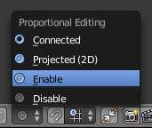
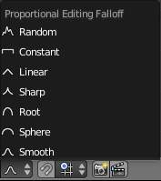
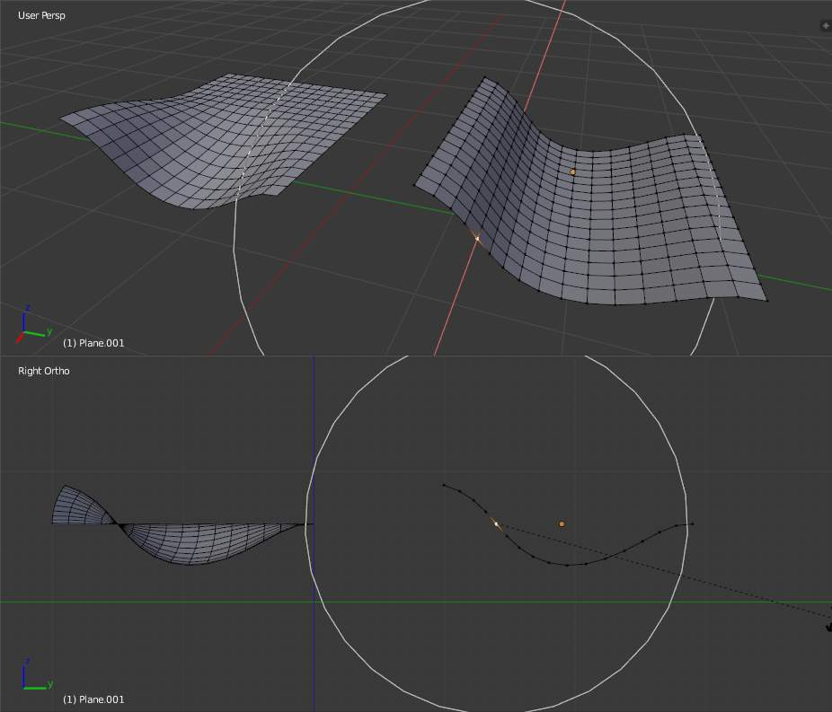
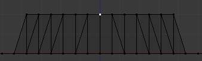
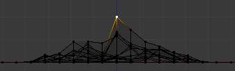
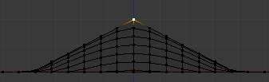
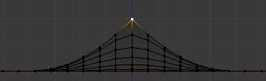
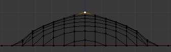
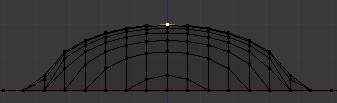
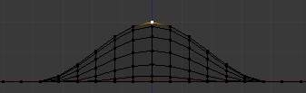

Proportional Edit¶
Proportional Edit is a way of transforming selected elements (such as vertices) while having that transformation affect other nearby elements. For example, having the movement of a single vertex cause the movement of unselected vertices within a given range. Unselected vertices that are closer to the selected vertex will move more than those farther from it (i.e. they will move proportionally relative to the location of the selected element). Since proportional editing affects the nearby geometry, it is very useful when you need to smoothly deform the surface of a dense mesh.
Note
Sculpting
Blender also has Sculpting that contains brushes and tools for proportionally editing a mesh without seeing the individual vertices.
物体模式¶
参考
OProportional editing is typically used in 编辑模式, however, it can also be used in 物体模式. In 物体模式 the tool works on entire objects rather than individual mesh components. In the image below, the green cube is the active Object, while the red and blue cubes are located within the proportional edit tool’s radius of influence. When the green cube is moved to the right, the other two cubes follow the movement.
Proportional editing in 物体模式.
编辑模式¶
参考
O, Alt-O, Shift-OWhen working with dense geometry, it can become difficult to make subtle adjustments to the vertices without causing visible lumps and creases in the model’s surface. When you face situations like this the proportional editing tool can be used to smoothly deform the surface of the model. This is done by the tool’s automatic modification of unselected vertices within a given range.
Proportional editing in 编辑模式.
Influence¶
You can increase or decrease the radius of the proportional editing influence with the mouse
wheel WheelUp, WheelDown or PageUp, PageDown
respectively. As you change the radius,
the points surrounding your selection will adjust their positions accordingly.
Influence circle.
Options¶

Proportional 编辑 tool. |

Falloff menu. |
{kind=link}
{kind=link}
The Proportional 编辑 mode menu is on the 3D视图 header.
- Disable
O,Alt-O - Proportional 编辑 is Off, only selected vertices will be affected.
- Enable
O,Alt-O - Vertices other than the selected vertex are affected, within a defined radius.
- Projected (2D)
Depth along the view is ignored when applying the radius.
The difference between regular and Projected (2D) proportional option (right).
- Connected
Alt-O - Rather than using a radius only, the proportional falloff spreads via connected geometry. This means that you can proportionally edit the vertices in a finger of a hand without affecting the other fingers. While the other vertices are physically close (in 3D space), they are far away following the topological edge connections of the mesh. The icon will have a grey center when Connected is active. This mode is only available in 编辑模式.
- Falloff
- While editing, you can change the curve profile used by either using the
submenu, using the header icon Falloff menu,
or by pressing
Shift-Oto toggle between the various options.
{kind=link}

Constant, No Falloff. |

Random Falloff. |

Linear Falloff. |

Sharp Falloff. |

Root Falloff. |

Sphere Falloff. |

Smooth Falloff. |
{kind=link}
{kind=link}
{kind=link}
{kind=link}
{kind=link}
{kind=link}
{kind=link}
例子s¶
Switch to a front view Numpad1 and activate the grab tool with G.
As you drag the point upwards, notice how nearby vertices are dragged along with it.
When you are satisfied with the placement, click LMB to fix the position.
If you are not satisfied,
cancel the operation and revert your mesh to the way it looked before with
RMB, Esc.
You can use the proportional editing tool to produce great effects with the scaling
S and rotation R tools,
as Fig. A landscape obtained via proportional editing. shows.
{kind=link}
A landscape obtained via proportional editing.
Combine these techniques with vertex painting to create fantastic landscapes. The Fig. Final rendered landscape. below shows the results of proportional editing after the application of textures and lighting.
{kind=link}